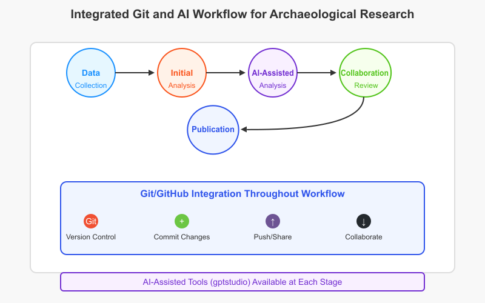
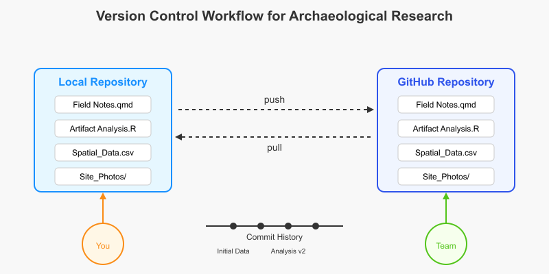

בקרת גרסאות וכלי AI למחקר ארכיאולוגי והיסטורי
שילוב Git, GitHub ו-Huggingface ב-R Studio
ד״ר שי גורדין
23/03/2025
מבוא
מטרות השיעור
חלק 1: בקרת גרסאות למחקר ארכיאולוגי
למה בכלל צריך בקרת גרסאות?
- מחקר ארכיאולוגי והיסטורי מייצר סוגים רבים של קבצים:
- נתונים מחפירות שדה
- קוד לניתוח סטטיסטי
- תמונות וויזואליזציות
- דוחות ופרסומים
- שכבות GIS ונתונים מרחביים
- כל אלה מתפתחים לאורך זמן ודורשים שיתוף פעולה
האתגר: ניהול קבצים מרובים
מהו Git?
- מערכת בקרת גרסאות המנהלת את האבולוציה של קבצים
- עוקבת אחר השינויים, מי ביצע אותם ומתי
- שומרת את ההיסטוריה המלאה של הפרויקט
- מאפשרת לחזור לגרסאות קודמות בקלות
- תוכננה לעבודה מבוזרת ושיתופית
מהו GitHub?
- פלטפורמת אירוח למאגרי Git
- מוסיף ממשק ויזואלי נוח ל-Git
- מקל על שיתוף פעולה בין חוקרים
- מאפשר לנהל משימות ודיונים
- יוצר נוכחות אינטרנטית אוטומטית לפרויקט
תרגיל מעשי 1: התקנה והגדרה ראשונית
עבדו ביחד עם המרצה (סרטונים בקישור הבא):
- פתחו חשבון GitHub
- התקינו Git במחשב שלכם
- הגדירו את שם המשתמש והדוא”ל שלכם ב-Git
- צרו מאגר ראשון למחקר ארכיאולוגי
## בדקו בקונסולה של הסטודיו (Console)
system("git --version")
## עברו לשורת הטרמינל (Terminal)
# התקינו git: https://git-scm.com/downloads/win
# הגדרת שם משתמש ודוא"ל
git config --global user.name "השם שלכם"
git config --global user.email "האימייל שלכם"
## יצירת מאגר חדש
git init excavation-project
cd excavation-projectהגדרה של גיטהאב:
- התקינו את חבילת usethis
- הגדירו את שם המשתמש והדוא”ל שלכם ב-Github
- צרו טוקן לגיטהאב - זהו שלב אבטחה חיוני שתצטרכו לעשות מדי פעם
# התקינו את חבילת usethis
install.packages("usethis")
library(usethis)
# הגדרת שם משתמש ודוא"ל
use_git_config(user.name = "Jane Doe", user.email = "jane@example.com")
## יצירת טוקן לגיטהאב
# Read: https://usethis.r-lib.org/articles/articles/git-credentials.html
# Read: https://usethis.r-lib.org/articles/articles/usethis-setup.html
usethis::create_github_token() # generates a PAT token you can copy/paste in the next step.
gitcreds::gitcreds_set() # paste the PAT from the previous step
# בדקו אם הגדרתם נכון את משתמש הגיטהאב שלכם
# השתמשו בפונקציה הבאה אם לא: usethis::use_git_config()
gh::gh_whoami()
usethis::gh_token_help()יצירת פרויקט גיטהאב מסטודיו:
- הגדירו פרויקט חדש ובחרו create a git repository
- התיקייה והמיקום שלה יהיו הגיטהאב המקומי על המחשב שלכם
- הוסיפו קובץ Readme וקובץ רישיון
- התחברו לגיטהאב
פתרון בעיות נפוצות בהתקנת Git
בדיקה בסיסית: האם Git מותקן כראוי?
# בדקו אם Git מותקן ומזוהה על ידי R
system("git --version")
# אם מקבלים שגיאה, יש לבצע את הצעדים הבאים:- אם Git לא מזוהה:
- וודאו שהתקנתם Git מהאתר הרשמי: https://git-scm.com/downloads/win
- בחרו באפשרות “Git from the command line and also from 3rd-party software” בהתקנה
- הפעילו מחדש את RStudio אחרי ההתקנה
- בדקו את נתיב ההתקנה של Git בהגדרות RStudio:
- פתחו Tools -> Global Options -> Git/SVN
- וודאו שנתיב ה-Git executable תקין (בדרך כלל C:/Program Files/Git/bin/git.exe)
בעיות נתיב (PATH) במערכת Windows
# בדיקת נתיב Git בשורת הפקודה של Windows
where git
# אם אינכם רואים תוצאה, הוסיפו את נתיב Git ל-PATH:- פתחו “Environment Variables” במערכת (חפשו “environment variables” בחיפוש Windows)
- תחת “System variables”, מצאו את המשתנה PATH ולחצו על “Edit”
- הוסיפו את הנתיב למיקום קובץ ה-git.exe (בדרך כלל C:Files)
- אתחלו את המחשב
- פתחו RStudio מחדש ובדקו שוב
בעיות אימות מול GitHub
- וודאו שאתם משתמשים ב-PAT (Personal Access Token) ולא בסיסמה רגילה:
- נוצר באמצעות
usethis::create_github_token() - יש להגדיר הרשאות מתאימות (לפחות
repo,workflow,user)
- נוצר באמצעות
- בדקו שהטוקן נשמר כראוי:
- השתמשו ב-
gitcreds::gitcreds_get()לבדיקה אם הטוקן קיים - אם יש בעיה, השתמשו ב-
gitcreds::gitcreds_set()מחדש
- השתמשו ב-
שגיאות נפוצות בעת חיבור RStudio לגיטהאב
שגיאת RStudio: could not find git executable
- פתרון: וודאו שהנתיב ל-Git נכון ב-Tools -> Global Options -> Git/SVN
שגיאת “Authentication failed”
- פתרון: בדקו שהטוקן תקף ושיש לו הרשאות מתאימות
- צרו טוקן חדש ב-GitHub (Settings -> Developer Settings -> Personal Access Tokens)
- הגדירו מחדש עם
gitcreds::gitcreds_set()
שגיאת “Error: unable to create (repo): HTTP 422”
- פתרון: כנראה שכבר קיים מאגר באותו שם בחשבון שלכם
- שנו את שם המאגר ב-
usethis::use_github(name = "שם_חדש")
צעדי הגדרה מתוקנים ובסדר מדויק
- התקינו Git והגדירו משתמש:
- התקינו חבילות נדרשות ב-R (סדר חשוב!):
# התקינו את כל החבילות הנדרשות
install.packages(c("usethis", "gitcreds", "gh", "credentials"))
library(usethis)- וודאו שהגדרות המשתמש זהות ב-Git וב-GitHub:
צעדי הגדרה מתוקנים - המשך
- צרו וקשרו טוקן GitHub:
# יצירת טוקן חדש (יפתח בדפדפן)
usethis::create_github_token()
# שמירת הטוקן (העתיקו את הטוקן שנוצר)
gitcreds::gitcreds_set()
# בדיקת האימות
gh::gh_whoami()- צרו פרויקט RStudio וחברו אותו לגיטהאב:
פתרון בעיית Proxy בקמפוס
אם אתם מתחברים דרך רשת הקמפוס וחווים בעיות התחברות:
# הגדרת proxy בגיט (הזינו את כתובת ה-proxy של האוניברסיטה)
git config --global http.proxy http://proxy.ariel.ac.il:8080
git config --global https.proxy https://proxy.ariel.ac.il:8080
# אם אתם מתחברים מהבית ולא צריכים proxy, בטלו את ההגדרות:
git config --global --unset http.proxy
git config --global --unset https.proxyאיך לבדוק אם החיבור בין RStudio ל-GitHub עובד?
בדיקה פשוטה:
# צרו שינוי קטן בקובץ README.md
writeLines("# פרויקט מחקר ארכיאולוגי\n\nזהו פרויקט מחקר בארכיאולוגיה.", "README.md")
# בדקו אם השינויים מזוהים ב-Git (צריכה להופיע הודעה בחלון Git)- בממשק RStudio, בדקו את הלשונית Git (בדרך כלל בפינה הימנית העליונה)
- סמנו V ליד השינויים שברצונכם לשלוח (stage changes)
- לחצו על “Commit” ורשמו הודעת commit
- לחצו על “Push” כדי לשלוח את השינויים לגיטהאב
- בדקו באתר GitHub שהשינויים הגיעו
משאבים לפתרון בעיות נוספות
מקורות מידע לפתרון בעיות:
חלק 2: כלי AI למחקר ארכיאולוגי ב-R Studio
מדוע להשתמש בבינה מלאכותית במחקר ארכיאולוגי?
- ניתוח טקסטים היסטוריים בהיקף נרחב
- זיהוי דפוסים בנתונים ארכיאולוגיים
- סיוע בתרגום ופענוח כתובות עתיקות
- הצלבת מקורות ומציאת קשרים בין ממצאים
- יצירת שחזורים והדמיות של אתרים עתיקים
מודלי בינה מלאכותית לשימוש החוקר
Hugging Face
- מגוון מודלים מוכנים לשימוש
- גישה באמצעות API מקוון
- חינמי לשימוש בסיסי
- מתאים למחקר אקדמי
Ollama
- הרצה מקומית על המחשב האישי
- ללא צורך בחיבור לאינטרנט לאחר ההורדה
- שליטה מלאה על המודלים
- פרטיות מוחלטת של הנתונים
תרגיל מעשי 2: התקנת Hugging Face API
צעד 1: יצירת חשבון ב-Hugging Face
- גשו לאתר huggingface.co והירשמו לחשבון חינמי
- נווטו אל הפרופיל שלכם ← הגדרות ← Access Tokens
- צרו טוקן חדש (בחרו ברמת הרשאות “Read” לגישה חינמית)
R Console
# שמירת הטוקן בקובץ סביבה (.Renviron)
# Opens the file for editing (creates if doesn't exist)
usethis::edit_r_environ(scope = "user")
# הדבק את השורה הבאה בתוך הקובץ .Renviron
HUGGINGFACE_API_KEY="הדביקו את התוקן של האגינגפייס כאן"
# גישה אלטרנטיבית עם usethis לא זמין
file.edit("~/.Renviron") # Unix/Mac
file.edit(file.path(Sys.getenv("HOME"), ".Renviron")) # Windows alternative
# הוספת .Renviron ל-.gitignore באמצעות usethis (חשוב במידה ודוחפים לגיטהאב)
usethis::use_git_ignore(".Renviron")צעד 2: התקנת חבילות נדרשות ב-R
צעד 3: יצירת פונקציה לגישה ל-API
R Function
hf_inference <- function(model_id, inputs, task = "text-generation", parameters = NULL) {
API_URL <- paste0("https://api-inference.huggingface.co/models/", model_id)
body <- list(inputs = inputs)
if (!is.null(parameters)) {
body$parameters <- parameters
}
response <- POST(
url = API_URL,
add_headers(
Authorization = paste("Bearer", Sys.getenv("HF_API_TOKEN")),
"Content-Type" = "application/json"
),
body = toJSON(body, auto_unbox = TRUE)
)
content(response)
}צעד 4: שימוש במודלים ספציפיים - דוגמה ראשונה
Text Generation with Mistral
# יצירת טקסט באמצעות Mistral-7B-Instruct
result <- hf_inference(
model_id = "mistralai/Mistral-7B-Instruct-v0.2",
inputs = "<s>[INST] תאר את הממלכה האשורית החדשה בתקופת שלטונו של אשורבניפל [/INST]",
parameters = list(
max_new_tokens = 250,
temperature = 0.7,
return_full_text = FALSE
)
)
# הדפסת התוצאה
cat(result[[1]]$generated_text)צעד 5: שימוש במודלים ספציפיים - דוגמה שנייה
Question Answering with BERT
result <- hf_inference(
model_id = "deepset/roberta-base-squad2",
inputs = list(
question = "מה היה הישג מרכזי של אשורבניפל?",
context = "אשורבניפל (668-627 לפנה״ס) היה המלך האחרון של האימפריה האשורית החדשה. הוא ידוע בהקמת הספרייה הגדולה בנינוה, שבה נאספו אלפי לוחות חרס ובהם טקסטים מסופוטמיים."
)
)
# הדפסת התשובה
cat("תשובה:", result$answer)התקנת Ollama API
צעד 1: התקנת Ollama
- גשו לאתר ollama.ai והורידו את הגרסה המתאימה למערכת ההפעלה שלכם
- Windows: הורידו והתקינו את התוכנה
- macOS: הורידו את האפליקציה או הריצו
curl -fsSL https://ollama.ai/install.sh | sh - Linux: הריצו
curl -fsSL https://ollama.ai/install.sh | sh
צעד 2: הפעלת Ollama והורדת מודל
צעד 3: יצירת פונקציות ב-R לשימוש ב-Ollama
R Functions
library(httr)
library(jsonlite)
ollama_generate <- function(prompt, model = "tinyllama", parameters = NULL) {
# פרמטרים בסיסיים
body <- list(
model = model,
prompt = prompt
)
# הוספת פרמטרים מותאמים אישית
if (!is.null(parameters)) {
body <- c(body, parameters)
}
response <- POST(
url = "http://localhost:11434/api/generate",
body = toJSON(body, auto_unbox = TRUE),
encode = "json"
)
content(response)
}צעד 4: פונקציית צ׳אט לשיחות מורכבות
צעד 5: שימוש בפונקציות
Using Ollama
# יצירת טקסט פשוטה
result <- ollama_generate(
prompt = "תאר את חורבן ממלכת ישראל על ידי האשורים בשנת 722 לפנה״ס",
model = "llama2"
)
# הצגת התוצאה
cat(result$response)
# לשיחה בסגנון צ׳אט
chat_result <- ollama_chat(
messages = list(
list(role = "user", content = "מה היו הסיבות העיקריות להתמוטטות הערים הכנעניות בסוף תקופת הברונזה המאוחרת?")
),
model = "llama2"
)
cat(chat_result$message$content)חלונות הקשר (Context Windows)
מהו חלון הקשר?
- חלון הקשר הוא כמות המידע שהמודל יכול ״לזכור״ ולעבד בבת אחת
- נמדד בטוקנים (בערך שווה ל-0.75 אורך מילה בעברית)
- משפיע מאוד על יכולת הניתוח של טקסטים ארוכים
- ככל שחלון ההקשר גדול יותר, כך המודל ״זוכר״ יותר מידע
השוואה בין חלונות הקשר
חלון הקשר רגיל (2K-4K טוקנים)
- מתאים למחשבים עם 8GB RAM
- תגובות מהירות יותר
- מספיק לשאלות קצרות
- לניתוח טקסטים קצרים
חלון הקשר גדול (8K-32K+ טוקנים)
- דורש 16GB+ RAM
- איטי יותר בהרצה
- מתאים לניתוח מסמכים שלמים
- זוכר פרטים משיחות ארוכות
מודלים לפי גודל חלון הקשר
חלון הקשר רגיל
ollama pull tinyllama(~2K)ollama pull llama2(~4K)ollama pull mistral(~4K)ollama pull phi(~4K)
חלון הקשר גדול
ollama pull llama2-70b(~8K)ollama pull wizard:13b(~8K)ollama pull mixtral(~8K)ollama pull claude-instant(~16K)
חלק 3: שילוב Git/GitHub ו-AI בזרימת עבודה
שלבים בזרימת עבודה משולבת (חלק א׳)
- איסוף נתונים
- תיעוד שיטות איסוף ב-Git
- שימוש ב-AI לניקוי וארגון נתונים
- ניתוח ראשוני
- כתיבת קוד בעזרת AI
- שמירת גרסאות בעזרת Git
- ניתוח מתקדם בעזרת AI
- קבלת רעיונות לניתוחים נוספים
- תיעוד התהליך והשינויים ב-Git
שלבים בזרימת עבודה משולבת (חלק ב׳)
- שיתוף פעולה וביקורת
- שיתוף הקוד והתוצאות דרך GitHub
- קבלת משוב וניהול שינויים
- פרסום
- יצירת דו”חות ופרסומים בעזרת Quarto Markdown
- שיתוף הפרויקט כולו דרך GitHub
תרגיל מעשי 3: ניתוח נתונים ארכיאולוגיים עם AI
שילוב Huggingface API בניתוח ממצאים ארכיאולוגיים
- נלמד כיצד לחבר את הקוד שלנו למודלי AI מתקדמים
- ננתח התפלגות מרחבית של ממצאים ארכיאולוגיים
- נשתמש במודלים שפותחו על ידי הקהילה המדעית הבינלאומית
הכנת סביבת העבודה
התקנת החבילות הנדרשות:
# התקנת חבילות נדרשות (פעם אחת בלבד)
if (!requireNamespace("tidyverse", quietly = TRUE)) install.packages("tidyverse")
if (!requireNamespace("httr", quietly = TRUE)) install.packages("httr")
if (!requireNamespace("jsonlite", quietly = TRUE)) install.packages("jsonlite")
if (!requireNamespace("plotly", quietly = TRUE)) install.packages("plotly")
# טעינת חבילות
library(tidyverse)
library(httr)
library(jsonlite)
library(plotly)מהן החבילות הנדרשות?
- tidyverse - לטיפול בנתונים וויזואליזציה
- httr - לביצוע בקשות API
- jsonlite - לעיבוד תשובות בפורמט JSON
- plotly - חבילת וויזואליזציות אינטראקטיביות ב-html
יצירת נתוני דוגמה
יצירת מערך נתוני חפירה:
# יצירת נתוני דוגמה של ממצאים ארכיאולוגיים
set.seed(123) # לשחזוריות התוצאות
artifacts <- tibble(
x = runif(200, 0, 10), # קואורדינטה מזרח-מערב
y = runif(200, 0, 10), # קואורדינטה צפון-דרום
period = sample(c("תקופת הברונזה", "תקופת הברזל", "התקופה ההלניסטית"),
200, replace = TRUE) # תקופה היסטורית
)
# הצגת מבנה הנתונים
head(artifacts)ויזואליזציה בסיסית
תצוגה מרחבית של הממצאים:
# יצירת תרשים פיזור בסיסי עם תמיכה מלאה ביוניקוד
plotly_visualization <- ggplotly(
ggplot(artifacts, aes(x = x, y = y, color = period)) +
geom_point(alpha = 0.7) +
theme_minimal()
) %>%
layout(
title = list(text = "התפלגות ממצאים ארכיאולוגיים לפי תקופה"),
xaxis = list(title = "קואורדינטה מזרח-מערב"),
yaxis = list(title = "קואורדינטה צפון-דרום"),
legend = list(title = list(text = "תקופה"))
)
# שמירת התרשים כאוביקט HTML
htmlwidgets::saveWidget(plotly_visualization, "archaeological_distribution.html")פונקציית האינטגרציה עם Huggingface
בניית פונקציה לניתוח AI:
# הגדרת פונקציה לשימוש ב-Huggingface API
analyze_with_ai <- function(data_summary, prompt,
api_key = Sys.getenv("HUGGINGFACE_API_KEY"),
model_id = "mistralai/Mistral-7B-Instruct-v0.2") {
# בדיקה שיש מפתח API
if (api_key == "") {
stop("נא להגדיר מפתח API של Huggingface")
}
# הכנת הנתונים עבור ה-API
artifacts_summary <- capture.output(summary(data_summary))
artifacts_str <- paste(artifacts_summary, collapse = "\n")
# יצירת הבקשה ל-API
endpoint <- paste0("https://api-inference.huggingface.co/models/", model_id)המשך: פונקציית האינטגרציה עם Huggingface
# בניית הבקשה בפורמט המתאים למודל
full_prompt <- paste0(
"להלן נתונים על ממצאים ארכיאולוגיים:\n\n",
artifacts_str,
"\n\n",
prompt
)
payload <- list(
inputs = full_prompt,
parameters = list(
max_new_tokens = 500,
temperature = 0.7,
return_full_text = FALSE
)
)
# שליחת הבקשה ל-API
response <- POST(
url = endpoint,
body = toJSON(payload, auto_unbox = TRUE),
add_headers(
"Authorization" = paste("Bearer", api_key),
"Content-Type" = "application/json"
),
encode = "json"
)סיום הפונקציה וטיפול בתשובות
# טיפול בתשובה
if (http_status(response)$category == "Success") {
content <- content(response, "parsed")
if (is.list(content) && length(content) > 0 && "generated_text" %in% names(content[[1]])) {
return(content[[1]]$generated_text)
} else {
return("התקבלה תשובה בפורמט לא צפוי")
}
} else {
return(paste("שגיאה:", http_status(response)$message))
}
}- חשוב לטפל בשגיאות אפשריות בתקשורת עם ה-API
- המבנה של התשובה יכול להשתנות בין מודלים שונים
- שימוש בפונקציות מספריית httr לניתוח הסטטוס
הדגמת השימוש בפונקציה
ניתוח כמותי ושאילת שאלות למודל:
# ניתוח כמותי בסיסי של הנתונים
period_counts <- artifacts %>% count(period)
print(period_counts)
# שאלה לניתוח ב-AI
analysis_prompt <- "אני חוקר/ת ארכיאולוג/ית. על סמך ההתפלגות של הממצאים:
1. האם ניתן לזהות דפוסים מעניינים בפיזור המרחבי?
2. מה המשמעות הארכיאולוגית האפשרית של ההתפלגות הנצפית?
3. אילו בדיקות נוספות היית ממליץ/ה לבצע?
אנא ספק/י ניתוח מקצועי מנקודת מבט ארכיאולוגית."
# הרצת הניתוח (הורידו את ה-# כאשר יש לכם מפתח API)
# Sys.setenv(HUGGINGFACE_API_KEY = "your_api_key_here")
# ai_analysis <- analyze_with_ai(artifacts, analysis_prompt)
# cat(ai_analysis)ויזואליזציה מתקדמת
ניתוח צפיפות לפי תקופה:
# דוגמה ליצירת ויזואליזציה מתקדמת (ללא תלות ב-AI)
# Initialize visualization framework with period-specific parameters
periods <- unique(artifacts$period)
plot_objects <- list()
# Implement period-specific analytical units with direct density estimation
for(i in seq_along(periods)) {
period_data <- filter(artifacts, period == periods[i])
# Construct individual period visualization with integrated density estimation
p <- plot_ly(data = period_data, x = ~x, y = ~y, type = "scatter",
mode = "markers", marker = list(opacity = 0.7),
name = periods[i]) %>%
layout(
title = periods[i],
xaxis = list(title = "קואורדינטות מזרח-מערב"),
yaxis = list(title = "קואורדינטות צפון-דרום")
)
# Add direct density visualization without matrix transformation
# Calculate kernel density estimate
kd <- MASS::kde2d(period_data$x, period_data$y, n = 50)
# Add contour visualization directly from density object
p <- p %>% add_contour(
x = kd$x,
y = kd$y,
z = kd$z, # Direct matrix representation
contours = list(coloring = "heatmap"),
colorscale = "Viridis",
opacity = 0.3,
showlegend = FALSE
)
plot_objects[[i]] <- p
}ניתוח צפיפות לפי תקופה:
# Synthesize period-specific analytical units into comparative framework
composite_visualization <- subplot(
plot_objects,
nrows = 1,
shareY = TRUE,
titleX = TRUE,
margin = 0.05
) %>%
layout(
title = list(
text = "ניתוח צפיפות ממצאים ארכיאולוגיים לפי תקופה",
font = list(size = 18)
),
margin = list(l = 100, r = 50, t = 100, b = 80),
annotations = list(
list(x = 0.16, y = 1.05, text = periods[1], showarrow = FALSE, xref = "paper", yref = "paper"),
list(x = 0.5, y = 1.05, text = periods[2], showarrow = FALSE, xref = "paper", yref = "paper"),
list(x = 0.84, y = 1.05, text = periods[3], showarrow = FALSE, xref = "paper", yref = "paper")
)
) %>%
config(locale = "he")
# Materialize analytical framework as interactive document
htmlwidgets::saveWidget(composite_visualization, "archaeological_density_analysis.html", selfcontained = TRUE)הנחיות לשימוש ב-Huggingface API
הערות לסטודנטים:
- יש להשיג מפתח API מ-Huggingface (https://huggingface.co/settings/tokens)
- ניתן להחליף את המודל למודלים אחרים, למשל:
- “google/gemma-7b-it” - מודל של גוגל
- “microsoft/phi-2” - מודל קטן ומהיר
- “avichay/Hebrew-mistral-7b-instruct” - מודל בעברית
- שמרו על המפתח שלכם בסוד ואל תכללו אותו בקוד שאתם מעלים לגיטהאב
- התנסו בפרמטרים שונים כמו temperature לקבלת תוצאות מגוונות
- נסו לשלב את תוצאות האנליזה עם הויזואליזציות
- תעדו את הפרומפטים ואת התוצאות במחברת המחקר שלכם
תרגיל סיכום יחידה ראשונה
מטלה להגשה:
- בחרו מערך נתונים ארכיאולוגי משלכם או השתמשו בנתוני הדוגמה
- צרו לפחות 2 ויזואליזציות שונות המציגות היבטים שונים של הנתונים
- נסחו 2-3 שאלות למודל ה-AI ונתחו את התשובות
- הגישו דוח קצר המשלב את הויזואליזציות, השאלות והתשובות
- העלו את כל החומרים למאגר הגיטהאב שיצרתם
הוראות לגיטהאב
- צרו מאגר Git חדש לפרויקט ארכיאולוגי
- הוסיפו קובץ Quarto Markdown לניתוח נתונים
- השתמשו ב-AI לשיפור הקוד והניתוח
- בצעו commit לשינויים עם הסבר מפורט
- דחפו את השינויים ל-GitHub
- שתפו את הקישור עם עמית ובקשו משוב
שאלות אתיות בשימוש ב-AI במחקר
- פרטיות נתונים: האם הנתונים ששולחים ל-AI רגישים?
- שקיפות: כיצד לתעד את השימוש ב-AI במחקר?
- דיוק: כיצד לוודא את נכונות התוצאות והניתוחים?
- קרדיט: כיצד לתת קרדיט נאות לכלי AI במחקר?
- הטיות: האם ישנן הטיות במודלים שעלולות להשפיע על המחקר?
תרגלו תיעוד נאות של שימוש ב-AI במחקר:
- פתחו קובץ README.md בפרויקט שלכם
- הוסיפו סעיף על שיטות המחקר
- תעדו במפורט את השימוש בכלי AI
- ציינו אילו חלקים מהניתוח נעשו בעזרת AI
- תארו את התהליך של בדיקת התוצאות
סיכום: יתרונות הגישה המשולבת
- שיפור השחזוריות: תיעוד מלא של כל שלבי המחקר
- יעילות: חיסכון בזמן באמצעות כלי AI
- שיתוף פעולה: עבודה יעילה יותר בצוותי מחקר
- שקיפות: פרסום הקוד, הנתונים והניתוח
- חדשנות: גישות ניתוח חדשות בעזרת AI
- למידה: שיפור מתמיד באמצעות משוב ושיתוף
משאבים נוספים ללמידה
- Git & GitHub:
- Happy Git with R מאת ג’ניפר בריאן
- Pro Git - ספר חינמי ומקיף
- huggingface ו-AI ב-R:
- שלום מודלים ללמידה עמוקה (Transformers)
- text - חבילה שמשתמשת במודלי שפה גדולים (LLMs) מהאגינגפייס
- מדריכים לשילוב הכלים במחקר ארכיאולוגי:
- rrtools: Tools for Writing Reproducible Research in R
- Batist, Z. and Roe, J. 2024. ‘Open Archaeology, Open Source? Collaborative practices in an emerging community of archaeological software engineers’. Internet Archaeology 67. https://doi.org/10.11141/ia.67.13
שאלות?

שיטות מתודולוגיות ב׳ / אונ׳ אריאל